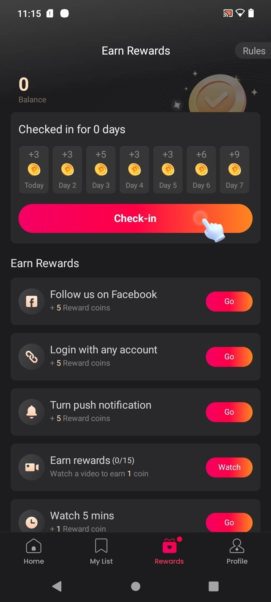
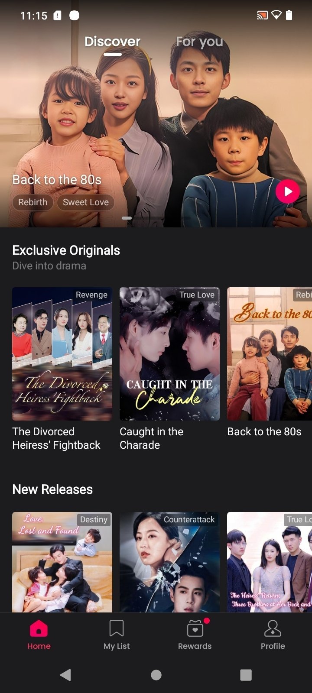

短剧盒子横评：为什么我最终留在了 dramabox
用过三四款同类短剧应用后，dramabox 在零氪路径、双端同步和付费透明度上的设计让我留下了这篇对比评测。
短剧这个品类，产品形态其实已经很成熟了——竖屏剧、金币体系、广告解锁、订阅月卡，市面上随便挑一款都能看。但用了大半年，从最初的随机下载到现在固定留在 dramabox官网，中间换过三四款同类应用，留下的理由值得捋一捋。
同类工具格局：大家都差不多，但细节见高低
短剧应用的核心玩法无非两种：要么纯订阅按月付费，要么金币+订阅双轨并行。纯订阅的厂商方案体验统一但价格刚性，金币体系给了零氪玩家一条活路，代价是广告弹窗和付费墙更多。dramabox 走的是后者——双轨并行，而且在这条路上把几个关键细节做得比同类更顺。
这类产品我常用的几个维度：免费额度够不够撑过新手上瘾期、换机能不能无缝接、大屏看会不会憋屈、掏钱时明不明白自己在花什么钱。dramabox 在这几项上的表现，是它区别于同品类其他选手的核心。
三个让我留下它的差异化设计
第一，零氪路径真的能走完，不是噱头
很多打着「免费追剧」旗号的应用，广告解锁一集的门槛要么是看三条六十秒视频，要么是解锁后还嵌插片广告。dramabox 的设计更克制：每天签到攒金币，完成几个轻量任务（比如打开 App 三分钟）也能领币，激励视频是主动触发的奖励项而不是强制前置条件。
一个有意思的设计是「先看一周免费路线再决定充不充」。从第一次打开应用到刷完整部热门剧，零氪玩家有足够长的缓冲期。我自己就是靠签到金币加少量激励视频，追完了当时最火的一部四十集剧，从头到尾没碰过付费墙。这种零氪路径的可走通性，在同类里不算多见——不少产品把免费额度压得很紧，就是为了在第三天或第五天逼你掏钱。

第二，App 和网页端真的是「同一个产品」
这是我换过几款同类后最在意的点。从dramabox下载拿到 App 后，我也发现它配了完整的网页播放端，浏览器里直接看，手机 App 里攒的金币、收藏的剧、追到第几集，登录同一个账号后全部实时同步。不是那种「有网页但功能阉割大半」的敷衍设计——网页端虽然少了签到和激励视频，但播放、收藏、进度同步这些核心体验是完整的。
最实用的场景是电脑大屏刷剧。竖屏剧在 27 寸屏上以居中竖幅呈现，两侧暗色背景把注意力集中在人物特写，观感比手机更有代入感。操作也全部由鼠标接管，进度条拖动比触屏精准得多。午休想刷两集、手机没电、或者想一边挂剧一边干别的，网页端这个补充形态让 dramabox 的使用场景比只有 App 的同类宽了不少。
第三，付费决策给了你思考时间，而不是逼单
大多数短剧应用的付费逻辑是：免费集数看完，弹窗直接推「限时首充」或「立即订阅」，关掉就是广告，再关掉还是弹窗。dramabox 在付费这块明显更克制——首启时不会主动弹订阅，付费入口藏在个人钱包页，而且在dramabox文档里专门教用户用充值档位的思考框架：先数还剩几集锁定、算好需要的币数、宁小勿大。
还有一个细节：支付渠道分得很清楚，App 内走商店结算、网页端是 Web 收银台，退款救济渠道不一样。这种透明度在同类里很少见——别的应用只告诉你「9.9 元起」，不会告诉你后续退款走哪条路。对那些真的想长期追几部剧的用户来说，这种信息差直接影响决策。

这些优势的代价
说优点的时候也得说说代价，没有完美的产品。
竖屏剧在大屏上的屏幕利用率确实偏低，两侧留白多，习惯了横屏大剧的人第一次看会觉得别扭——但这是短剧品类本身的形态选择，不是 dramabox 一家的问题。网页端少了签到和激励视频，零氪玩家要攒金币还得切回 App，双端切换有一点摩擦。
多设备同时播放可能出现进度互踩，这点 dramabox 在文档里明确提醒了，但产品本身没有做冲突处理——同时在手机和电脑上点播放，两边进度会来回跳。另一个门槛是账号登录的一致性：用 Google 登过再用邮箱登，是两个完全独立的账号，新用户很容易踩这个坑。
付费的透明并不等于便宜。金币单价折算下来，单集解锁的总价如果追整部剧，确实比订阅贵。这是双轨制的固有矛盾——给零氪留了路，但付费用户为灵活性买单。
选购结论：什么样的人选它，什么样的人换别的
如果你追剧是「有空就刷两集、不固定节奏」，不想为了看短剧专门包月，dramabox 的零氪路径和金币体系就是为你设计的。每天签到三分钟，攒一周能追完一部小体量的剧，或者攒够了再一次解锁喜欢的剧——这种弹性比订阅更舒服。
如果你只在通勤路上看，手机就是全部设备，那有没有网页端对你没影响，可以去对比各家的金币单价和广告密度。如果你是重度追剧用户，一天能刷好几部，那还是直接订阅更划算——dramabox 的订阅价格和同类比没有明显优势，只是在付费决策的引导上更友好。
换机党、多设备并用的用户，选 dramabox 基本没悬念。云同步覆盖观看历史、收藏列表、金币余额和订阅状态，换手机只要同一个登录方式重新登一遍，所有东西都在。这个体验在同品类里属于第一梯队。
最后给一句明确的推荐语：想靠零氪追完几部剧、又不想被弹窗逼单的，dramabox 是目前短剧盒子里最省心的选择之一。双端同步和付费透明这两点，让它比同类产品更像一个「为用户考虑」的产品，而不是纯粹靠付费墙逼转化的流量工具。写这篇对比的时候顺手查了下，App 和配套资料在 GitHub、Gitee、GitCode 几个仓库里都能找到。